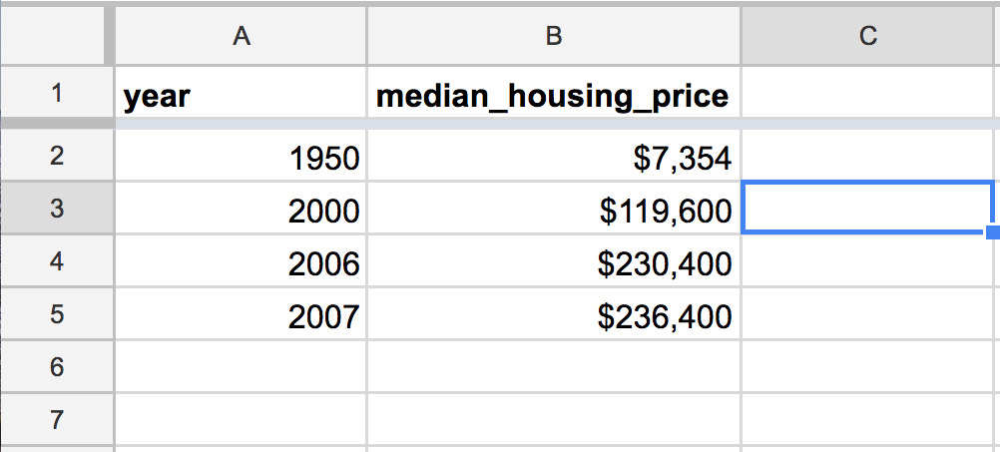
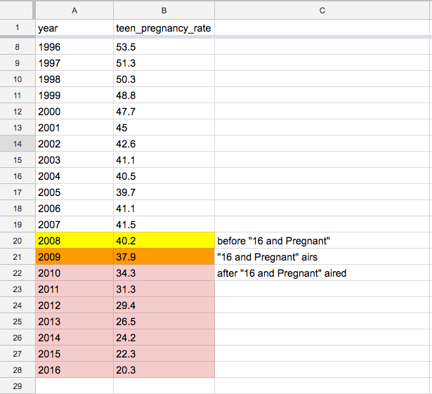
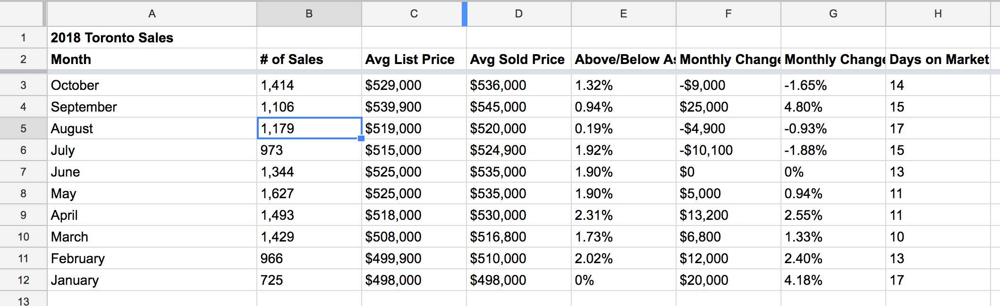
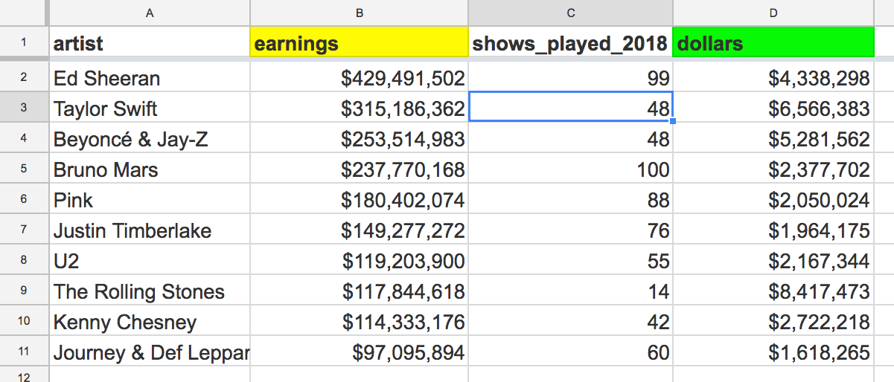
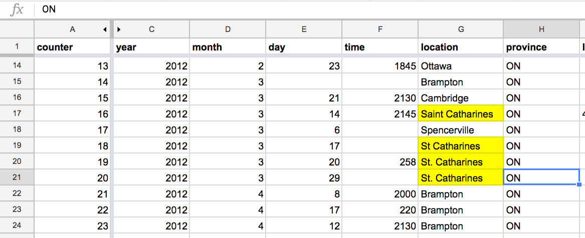
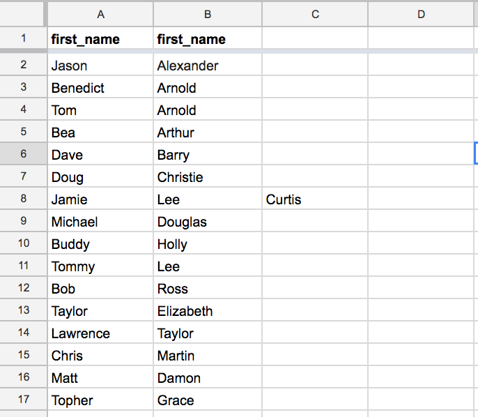
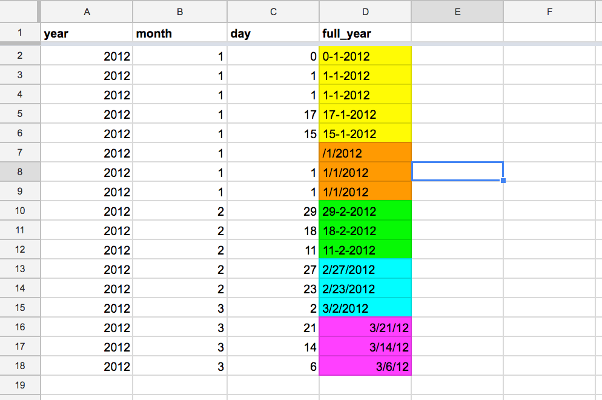
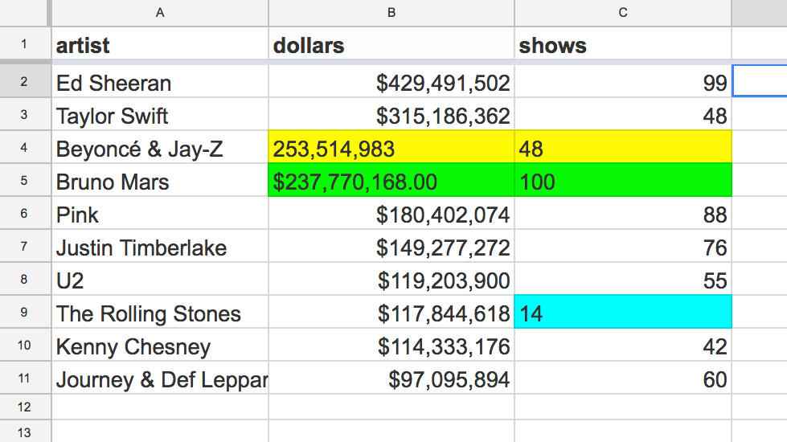
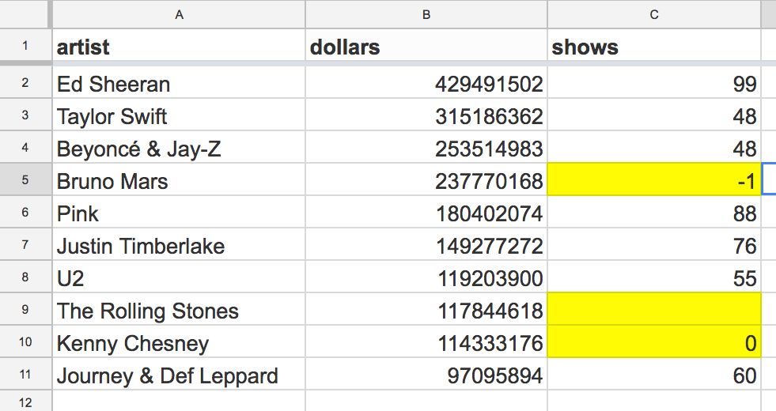

Download all the data used in these examples: data_working_with_data.zip
| Questions to ask your data |
|---|
| Are there missing or truncated values? |
| Are there out of range values? |
| Look at all the values that appear in a column/row – do they make sense? |
| Are there similar repeated values? |
| Is the data format what you would expect for the data type? |
| How was the data collected? Is it from a survey (survey – online survey vs. phone calls)? |
| How was the data verified? If data is entered by hand by a human person, how was it verified? |
| When was the data collected? |
| What is the gap between being collected and published? ie., there will always be a lag between when census data is collected from Canadians and when it is made available (to download/access) |
| Example | What does it look like |
|---|---|
| Housing prices since the 1950s Wow! Homes got expensive! Adjusted for inflation, the 1950 home was $44,600. Still a big spike, but less drastic (and other factors, like the size of homes changing, can help explain this change). |
 |
💻 How to fix: Use a trustworthy tool like BOC’s inflation calculator to adjust housing data to 2019 values.
| Example | What does it look like |
|---|---|
| MTV’s Teen Mom vs. teen birth rate Teen Mom aired its first season in the summer of 2009. The following year the teen birth rate dropped 3.6%, and the rate continued to drop every year following — is an MTV reality television to thank for this drop in teen pregnancy? What was the historical trend? |
 |
| Example | What does it look like |
|---|---|
| 2018 Toronto condo sales date If a data set is to represent a full year, check that all months are recorded |
 |
| Example | What does it look like |
|---|---|
| Column labels are too broad or unclear Both earnings and dollars are bad column headers. Once you divide the dollars value by the shows_played_2101 value, it is clear that dollars refers to total earnings for the complete tour in 2018. The headers should be updated to reflect the content (the total per tour earning, and the per show earnings). |
 |
highest_grossing_tours_2018.csv
Los Angelos instead of Los AngelesSault Sainte. Marie and Sault Ste. Marie| Example | What does it look like |
|---|---|
| Inconsistent place names Here are three options for a city in Ontario. Which is correct? |
 |
first_name and last_name are accurately reflect the content| Example | What does it look like |
|---|---|
| Checking names Can you spot the celebrity whose name is incorrectly entered? |
 |
2015 vs 15)
10/9/15 and 9/10/15 are valid date formats, but are they the same date?| Example | What does it look like |
|---|---|
| Checking dates There are four different dates formats here. If the data was collected in Canada, which format should be used? |
 |
02901| Example | What does it look like |
|---|---|
| Checking numberical values It looks like some of these number values are formatted incorrectly — check that it is a formatting error (and not something else) |
 |
0 or if they instead mean "nothing". (-1 is also sometimes used this way.)| Example | What does it look like |
|---|---|
| Checking for zeros Did Bruno Mars really make millions of dollars playing a negative number of shows? |
 |
Apple’s Numbers can only handle 255 columns. If 255 rows, you might only have a portion of the data. Go back to the source to confirm or request the full dataset.
If you see any of these values in your data, treat them with an abundance of caution:
Numbers:
65,5352552,147,483,6474,294,967,295555-348599999 (or any other long sequence of 9’s)00000 (or any other sequence of 0’s)Dates:
Spreadsheet has dates in 1900, 1904, 1969, or 1970
Excel’s default date from which it counts all other dates is January 1st, 1900, unless you’re using Excel on a Mac, in which case it’s January 1st, 1904. There are a variety of ways in which data in Excel can be entered or calculated incorrectly and end up as one of these two dates. If you spot them in your data, it’s probably an issue.
Many databases and applications will often generate a date of 1970-01-01T00:00:00Z or 1969-12-31T23:59:59Z which is the Unix epoch for timestamps. In other words this is what happens when a system tries to display an empty value or a 0 value as a date.
Locations:
0°00'00.0"N+0°00'00.0"E or simply 0°N 0°E12345 (Schenectady, New York)90210 (Beverly Hills, CA)Each of these numbers has an indication of a particular error made by either a human or a computer. If you see them, ensure they actually mean what you think they mean!
Note: Many of these tips are pulled from Quartz’s Bad Data Guide.
January 1st, 1904.Use your account on Learno.
Complete module 3 from Cleaning data in Excel. Feel free to use Google Spreadsheets when working with the data.
| Questions to ask your data |
|---|
| Are there missing or truncated values? |
| Are there out of range values? |
| Look at all the values that appear in a column/row – do they make sense? |
| Are there similar repeated values? |
| Is the data format what you would expect for the data type? |
| How was the data collected? Is it from a survey (survey – online survey vs. phone calls)? |
| How was the data verified? If data is entered by hand by a human person, how was it verified? |
| When was the data collected? |
| What is the gap between being collected and published? ie., there will always be a lag between when census data is collected from Canadians and when it is made available (to download/access) |